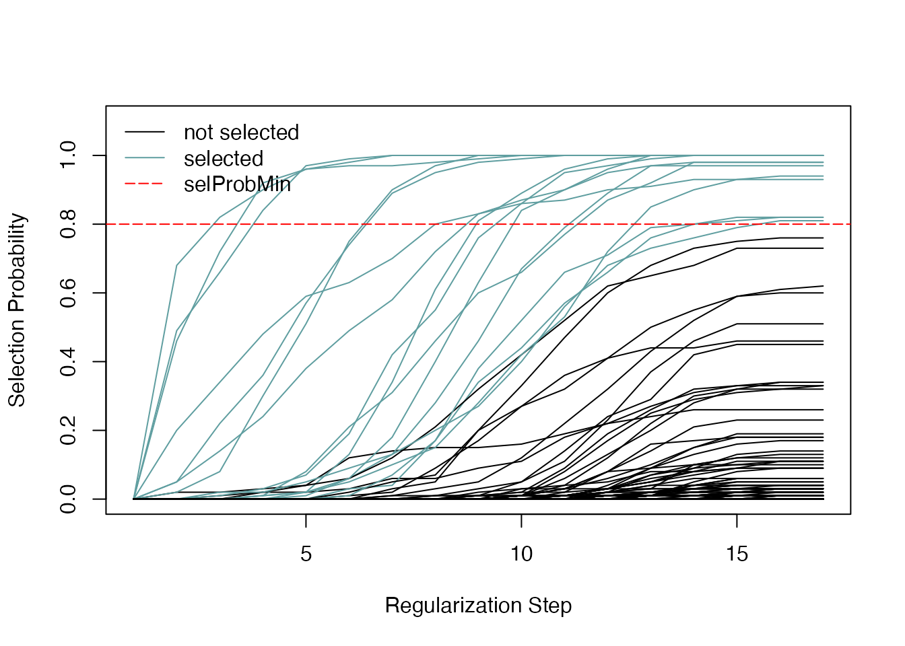
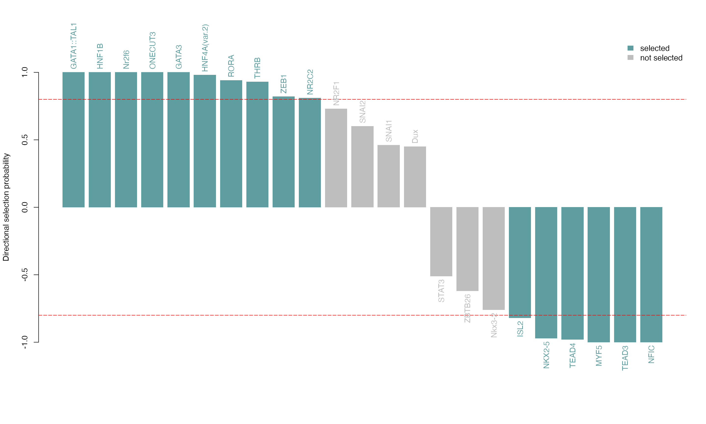
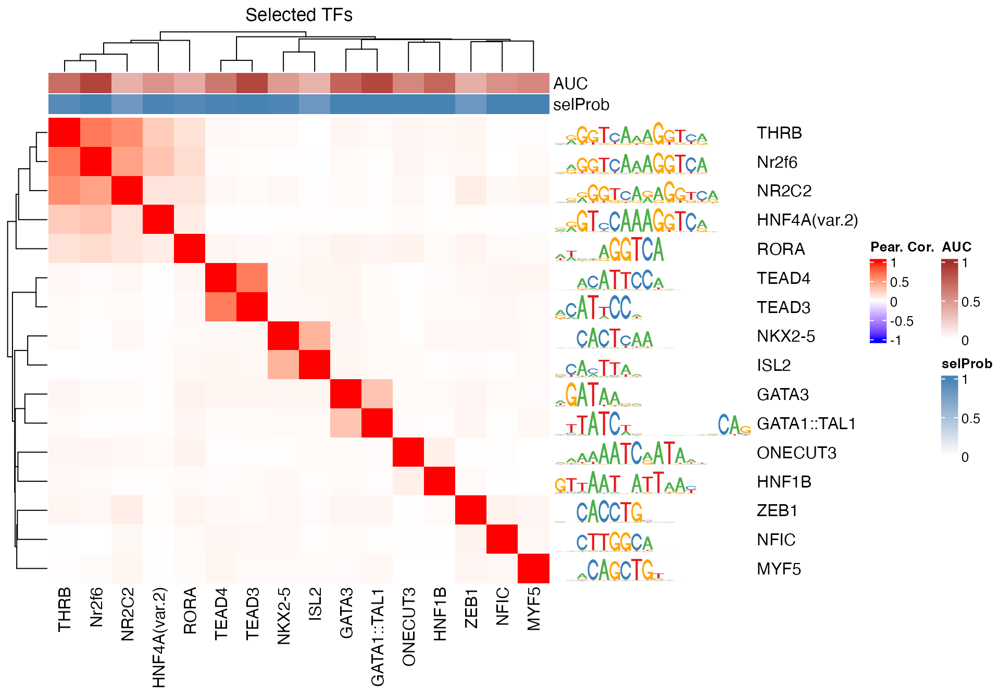

Regression Based Approach for Motif Selection
Dania Machlab, Lukas Burger, Charlotte Soneson, Michael Stadler
2021-11-12
Source:vignettes/selecting_motifs_with_randLassoStabSel.Rmd
selecting_motifs_with_randLassoStabSel.Rmd
Introduction
Identifying important transcription factor (TF) motifs, as shown in the main vignette, could also be done using a regression based approach, where motifs are selected and have to compete against each other for selection. In this framework, the response vector can be the observed experimental measure of interest, e.g. log-fold changes of accessibility for a set of regions, and the predictors consist of the TF motif hits across those regions. In monaLisa, we implement the randomized lasso stability selection proposed by Meinshausen and Bühlmann (2010) with the improved error bounds introduced by Shah and Samworth (2013). We have modified the stabs::glmnet.lasso function used by stabs::stabsel from the stabs package to implement the randomized lasso.
Lasso stability selection implements the lasso regression multiple times on subsamples of the data, and returns a selection probability for each predictor (number of times selected divided by number of regressions done). With the randomized lasso, a weakness parameter is additionally used to vary the lasso penalty term \(\lambda\) to a randomly chosen value between [\(\lambda\), \(\lambda\)/weakness] for each predictor. Although the main appeal of stability selection is in cases where the number of predictors exceeds the number of observations, it also performs better variable selection with noisy data (Meinshausen and Bühlmann 2010).
With this approach, TF motifs compete against each other to explain the response vector, and we can also include additional predictors like GC content to compete against the TF motifs for selection. This is especially useful if the response is biased by sequence composition, for example if regions with higher GC content tend to have higher response values.
Motif selection with Randomized Lasso Stability Selection
In the example below, we select for TF motifs explaining log-fold changes in chromatin accessibility (ATAC-seq) across the enhancers between mouse liver and lung tissue at P0, but this can be applied to other data types as well (ChIP-seq, RNA-seq, methylation etc.). Positive log2-fold changes indicate more accessibility in the liver tissue, whereas negative values indicate more accessibility in the lung tissue.
Load packages
We start by loading the needed packages:
library(monaLisa)
library(JASPAR2020)
library(TFBSTools)
library(BSgenome.Mmusculus.UCSC.mm10)
library(Biostrings)
library(SummarizedExperiment)
library(ComplexHeatmap)
library(circlize)Load dataset
In our example dataset, we have quantified ATAC-seq reads on enhancers in mouse P0 lung and liver tissues. The log2-fold change (our response vector in this example) is for liver vs lung chromatin accessibility. We are using a set of 10,000 randomly sampled enhancers to illustrate how randomized lasso stability selection can be used to select TFs.
# load GRanges object with logFC and peaks
gr_path <- system.file("extdata", "atac_liver_vs_lung.rds",
package = "monaLisa")
gr <- readRDS(gr_path)Get TFBS per motif and peak
We will now construct the transcription factor binding site (TFBS) matrix for known motifs (from a database like JASPAR) in peak regions. We use the monaLisa::findMotifHits function to scan for TF motif hits. This matrix will be the predictor matrix in our regression. This step may take a while, and it may be useful to parallelize it using the BPPARAM argument (e.g. to run on n parallel threads using the multi-core backend, you can use: findMotifHits(..., BPPARAM = BiocParallel::MulticoreParam(n))).
As mentioned, this framework offers the flexibility to add additional predictors to compete against the TF motifs for selection. Here, we add the fraction of G+C and CpG observed/expected ratio as predictors, to ensure that selected TF motifs are not just detecting a simple trend in GC or CpG composition.
# get PFMs (vertebrate TFs from Jaspar)
pfms <- getMatrixSet(JASPAR2020, list(matrixtype = "PFM",
tax_group = "vertebrates"))
# randomly sample 300 PFMs for illustration purposes (for quick runtime)
set.seed(4563)
pfms <- pfms[sample(length(pfms), size = 300)]
# convert PFMs to PWMs
pwms <- toPWM(pfms)
# get TFBS on given GRanges (peaks)
# suppress warnings generated by matchPWM due to the presence of Ns
# in the sequences
peakSeq <- getSeq(BSgenome.Mmusculus.UCSC.mm10, gr)
suppressWarnings({
hits <- findMotifHits(query = pwms, subject = peakSeq, min.score = 10.0,
BPPARAM = BiocParallel::SerialParam())
})
# get TFBS matrix
TFBSmatrix <- unclass(table(factor(seqnames(hits), levels = seqlevels(hits)),
factor(hits$pwmname, levels = name(pwms))))
TFBSmatrix[1:6, 1:6]
#>
#> NR3C2 Arnt LHX1 SNAI1 MAFG ZSCAN4
#> peak_51663 0 0 0 0 0 0
#> peak_57870 0 0 0 0 0 0
#> peak_2986 2 0 0 0 0 0
#> peak_124022 0 0 0 0 0 0
#> peak_29925 0 2 0 1 0 0
#> peak_95246 0 0 0 0 0 0
# remove TF motifs with 0 binding sites in all regions
zero_TF <- colSums(TFBSmatrix) == 0
sum(zero_TF)
#> [1] 2
TFBSmatrix <- TFBSmatrix[, !zero_TF]
# calculate G+C and CpG obs/expected
fMono <- oligonucleotideFrequency(peakSeq, width = 1L, as.prob = TRUE)
fDi <- oligonucleotideFrequency(peakSeq, width = 2L, as.prob = TRUE)
fracGC <- fMono[, "G"] + fMono[, "C"]
oeCpG <- (fDi[, "CG"] + 0.01) / (fMono[, "G"] * fMono[, "C"] + 0.01)
# add GC and oeCpG to predictor matrix
TFBSmatrix <- cbind(fracGC, oeCpG, TFBSmatrix)
TFBSmatrix[1:6, 1:6]
#> fracGC oeCpG NR3C2 Arnt LHX1 SNAI1
#> peak_51663 0.5155709 0.4079115 0 0 0 0
#> peak_57870 0.4963235 0.3048298 0 0 0 0
#> peak_2986 0.4008264 0.3103806 2 0 0 0
#> peak_124022 0.4572650 0.4429813 0 0 0 0
#> peak_29925 0.4675000 0.3495939 0 2 0 1
#> peak_95246 0.5144509 0.4020976 0 0 0 0Identify important TFs
We can now run randomized lasso stability selection to identify TFs that are likely to explain the log-fold changes in accessibility.
# # randLassoStabSel() is stochastic, so we set a seed to reproduce
# # ... a parallel run
# RNGkind("L'Ecuyer-CMRG")
# set.seed(123)
# se <- randLassoStabSel(x = TFBSmatrix, y = gr$logFC_liver_vs_lung,
# cutoff = 0.8, mc.preschedule = TRUE,
# mc.set.seed = TRUE, mc.cores = 2L)
# if not running in parallel mode, it is enough to use set.seed() before
# ... using the function to ensure reproducibility (with 1 core)
set.seed(123)
se <- randLassoStabSel(x = TFBSmatrix, y = gr$logFC_liver_vs_lung,
cutoff = 0.8)
se
#> class: SummarizedExperiment
#> dim: 10000 300
#> metadata(12): stabsel.params.cutoff stabsel.params.selected ...
#> stabsel.params.call randStabsel.params.weakness
#> assays(1): x
#> rownames(10000): peak_51663 peak_57870 ... peak_98880 peak_67984
#> rowData names(1): y
#> colnames(300): fracGC oeCpG ... CLOCK OLIG2
#> colData names(20): selProb selected ... regStep16 regStep17
# selected TFs
colnames(se)[se$selected]
#> [1] "NKX2-5" "GATA1::TAL1" "HNF1B" "HNF4A(var.2)" "Nr2f6"
#> [6] "ONECUT3" "MYF5" "THRB" "ISL2" "NR2C2"
#> [11] "TEAD3" "TEAD4" "GATA3" "RORA" "NFIC"
#> [16] "ZEB1"The stability paths visualize how predictors get selected, decreasing regularization stringency (from left to right):

Each line corresponds to a predictor, and we can see the selection probabilities as a function of the regularization steps, corresponding to decreasing values for the lambda regularization parameter in lasso. The predictor (TF motif) selection happens at the last step, given the specified minimum probability.
We can also visualize the selection probabilities of the selected TF motifs, optionally multiplied by the sign of the correlation to the response vector, to know how the TF relates to the change of accessibility (directional parameter). Note that although one can vary the selProbMinPlot argument which sets the selection probability cutoff, it is best to re-run randomized lasso stability selection with the new cutoff, as this influences other parameter choices the model uses internally. See Meinshausen and Bühlmann (2010) for more details.
plotSelectionProb(se, directional = TRUE)
Next, we visualize the correlation structure of the TFBS matrix and selected TF motifs. While the colinearity of predictors is generally an issue in regression-based approaches where variables are selected, randomized lasso stability selection generally does better at co-selecting correlated predictors. In practice, we still see it select predictors with correlations as high as 0.9. However, it is good to keep in mind that this can be an issue, and that predictors that are extremely correlated with each other might not end up being co-selected. In a bad case example, if we have two identical predictors, neither of them could end up being selected if half of the times the regressions are done, one would be randomly selected, and the other one in the other half, giving each a selection probability of 0.5. If many cases of high correlations exist or this is a concern, one may consider selecting a representative set of predictors to use.
# subset the selected TFs
sel <- colnames(se)[se$selected]
se_sub <- se[, sel]
# exclude oeCpG and fracGC
excl <- colnames(se_sub) %in% c("oeCpG", "fracGC")
se_sub <- se_sub[, !excl]
# correlation matrix
TFBSmatrixCorSel <- cor(TFBSmatrix[, colnames(se_sub)], method = "pearson")
# heatmap
pfmsSel <- pfms[match(colnames(TFBSmatrixCorSel), name(pfms))]
maxwidth <- max(sapply(TFBSTools::Matrix(pfmsSel), ncol))
seqlogoGrobs <- lapply(pfmsSel, seqLogoGrob, xmax = maxwidth)
hmSeqlogo <- rowAnnotation(logo = annoSeqlogo(seqlogoGrobs, which = "row"),
annotation_width = unit(2, "inch"),
show_annotation_name = FALSE
)
colAnn <- HeatmapAnnotation(AUC = se_sub$selAUC, selProb = se_sub$selProb,
show_legend = TRUE,
show_annotation_name = TRUE,
col = list(
AUC = colorRamp2(c(0, 1),
c("white", "brown")),
selProb = colorRamp2(c(0, 1),
c("white", "steelblue")))
)
Heatmap(TFBSmatrixCorSel,
show_row_names = TRUE,
show_column_names = TRUE,
name = "Pear. Cor.", column_title = "Selected TFs",
col = colorRamp2(c(-1, 0, 1), c("blue", "white", "red")),
right_annotation = hmSeqlogo,
top_annotation = colAnn)
# exclude oeCpG and fracGC
excl <- colnames(se) %in% c("oeCpG", "fracGC")
se_sub <- se[, !excl]
# correlation matrix
TFBSmatrixCorSel <- cor(TFBSmatrix[, colnames(se_sub)], method = "pearson")
# heatmap annotations
ann <- HeatmapAnnotation(
selected = as.character(se_sub$selected),
AUC = se_sub$selAUC,
selProb = se_sub$selProb,
col = list(selected = c("TRUE"="forestgreen",
"FALSE"="grey"),
AUC = colorRamp2(c(0, 1),
c("white", "brown")),
selProb = colorRamp2(c(0, 1),
c("white", "steelblue")))
)
# heatmap
Heatmap(TFBSmatrixCorSel, show_row_names = FALSE, show_column_names = FALSE,
name = "Pear. Cor.", column_title = "All TFs",
col = colorRamp2(c(-1, 0, 1), c("blue", "white", "red")),
top_annotation = ann)
We can examine the peaks that have hits for a selected TF motif of interest, ordered by absolute accessibility changes.
TF <- sel[2]
TF
#> [1] "GATA1::TAL1"
i <- which(assay(se, "x")[, TF] > 0) # peaks that contain TF hits...
nm <- names(sort(abs(gr$logFC_liver_vs_lung[i]),
decreasing = TRUE)) # ... order by |logFC|
head(gr[nm])
#> GRanges object with 6 ranges and 1 metadata column:
#> seqnames ranges strand | logFC_liver_vs_lung
#> <Rle> <IRanges> <Rle> | <numeric>
#> peak_59642 chr8 80499941-80501128 * | 5.31505
#> peak_58095 chr8 40658907-40659590 * | 5.13536
#> peak_100144 chr14 69318236-69318909 * | 5.09810
#> peak_98635 chr14 41124351-41126121 * | 5.07972
#> peak_42826 chr6 29700952-29701570 * | 5.02324
#> peak_44599 chr6 67186496-67187415 * | 4.97407
#> -------
#> seqinfo: 19 sequences from an unspecified genome; no seqlengthsSession info and logo
The monaLisa logo uses a drawing that was obtained from http://vectorish.com/lisa-simpson.html under the Creative Commons attribution - non-commercial 3.0 license: https://creativecommons.org/licenses/by-nc/3.0/.
This vignette was built using:
sessionInfo()
#> R Under development (unstable) (2021-11-11 r81177)
#> Platform: x86_64-apple-darwin17.0 (64-bit)
#> Running under: macOS Catalina 10.15.7
#>
#> Matrix products: default
#> BLAS: /Library/Frameworks/R.framework/Versions/4.2/Resources/lib/libRblas.0.dylib
#> LAPACK: /Library/Frameworks/R.framework/Versions/4.2/Resources/lib/libRlapack.dylib
#>
#> locale:
#> [1] en_US.UTF-8/en_US.UTF-8/en_US.UTF-8/C/en_US.UTF-8/en_US.UTF-8
#>
#> attached base packages:
#> [1] grid stats4 stats graphics grDevices utils datasets
#> [8] methods base
#>
#> other attached packages:
#> [1] circlize_0.4.13 ComplexHeatmap_2.11.0
#> [3] SummarizedExperiment_1.25.2 Biobase_2.55.0
#> [5] MatrixGenerics_1.7.0 matrixStats_0.61.0
#> [7] BSgenome.Mmusculus.UCSC.mm10_1.4.3 BSgenome_1.63.2
#> [9] rtracklayer_1.55.0 Biostrings_2.63.0
#> [11] XVector_0.35.0 GenomicRanges_1.47.3
#> [13] GenomeInfoDb_1.31.1 IRanges_2.29.0
#> [15] S4Vectors_0.33.2 BiocGenerics_0.41.1
#> [17] TFBSTools_1.33.0 JASPAR2020_0.99.10
#> [19] monaLisa_1.1.0 BiocStyle_2.23.0
#>
#> loaded via a namespace (and not attached):
#> [1] vioplot_0.3.7 colorspace_2.0-2
#> [3] rjson_0.2.20 ellipsis_0.3.2
#> [5] rprojroot_2.0.2 GlobalOptions_0.1.2
#> [7] fs_1.5.0 clue_0.3-60
#> [9] bit64_4.0.5 AnnotationDbi_1.57.1
#> [11] fansi_0.5.0 splines_4.2.0
#> [13] R.methodsS3_1.8.1 codetools_0.2-18
#> [15] doParallel_1.0.16 cachem_1.0.6
#> [17] knitr_1.36 jsonlite_1.7.2
#> [19] Rsamtools_2.11.0 seqLogo_1.61.0
#> [21] annotate_1.73.0 GO.db_3.14.0
#> [23] cluster_2.1.2 R.oo_1.24.0
#> [25] png_0.1-7 httr_1.4.2
#> [27] BiocManager_1.30.16 readr_2.1.0
#> [29] compiler_4.2.0 assertthat_0.2.1
#> [31] Matrix_1.3-4 fastmap_1.1.0
#> [33] htmltools_0.5.2 tools_4.2.0
#> [35] gtable_0.3.0 glue_1.5.0
#> [37] TFMPvalue_0.0.8 GenomeInfoDbData_1.2.7
#> [39] reshape2_1.4.4 dplyr_1.0.7
#> [41] Rcpp_1.0.7 jquerylib_0.1.4
#> [43] pkgdown_1.9000.9000.9000 vctrs_0.3.8
#> [45] iterators_1.0.13 xfun_0.28
#> [47] CNEr_1.31.0 stringr_1.4.0
#> [49] lifecycle_1.0.1 restfulr_0.0.13
#> [51] poweRlaw_0.70.6 gtools_3.9.2
#> [53] XML_3.99-0.8 zoo_1.8-9
#> [55] zlibbioc_1.41.0 scales_1.1.1
#> [57] ragg_1.2.0 hms_1.1.1
#> [59] parallel_4.2.0 RColorBrewer_1.1-2
#> [61] yaml_2.2.1 memoise_2.0.0
#> [63] ggplot2_3.3.5 stabs_0.6-4
#> [65] sass_0.4.0 stringi_1.7.5
#> [67] RSQLite_2.2.8 highr_0.9
#> [69] BiocIO_1.5.0 desc_1.4.0
#> [71] foreach_1.5.1 caTools_1.18.2
#> [73] BiocParallel_1.29.0 shape_1.4.6
#> [75] rlang_0.4.12 pkgconfig_2.0.3
#> [77] systemfonts_1.0.3 bitops_1.0-7
#> [79] pracma_2.3.3 evaluate_0.14
#> [81] lattice_0.20-45 purrr_0.3.4
#> [83] GenomicAlignments_1.31.2 bit_4.0.4
#> [85] tidyselect_1.1.1 plyr_1.8.6
#> [87] magrittr_2.0.1 bookdown_0.24
#> [89] R6_2.5.1 generics_0.1.1
#> [91] sm_2.2-5.7 DelayedArray_0.21.1
#> [93] DBI_1.1.1 pillar_1.6.4
#> [95] survival_3.2-13 KEGGREST_1.35.0
#> [97] RCurl_1.98-1.5 tibble_3.1.6
#> [99] crayon_1.4.2 utf8_1.2.2
#> [101] tzdb_0.2.0 rmarkdown_2.11
#> [103] GetoptLong_1.0.5 blob_1.2.2
#> [105] digest_0.6.28 xtable_1.8-4
#> [107] R.utils_2.11.0 textshaping_0.3.6
#> [109] glmnet_4.1-3 munsell_0.5.0
#> [111] DirichletMultinomial_1.37.0 bslib_0.3.1References
Meinshausen, Nicolai, and Peter Bühlmann. 2010. “Stability Selection.” Journal of the Royal Statistical Society: Series B (Statistical Methodology) 72 (4): 417–73. https://doi.org/doi:10.1111/j.1467-9868.2010.00740.x.
Shah, Rajen D., and Richard J. Samworth. 2013. “Variable Selection with Error Control: Another Look at Stability Selection.” Journal of the Royal Statistical Society: Series B (Statistical Methodology) 75 (1): 55–80. https://doi.org/doi:10.1111/j.1467-9868.2011.01034.x.